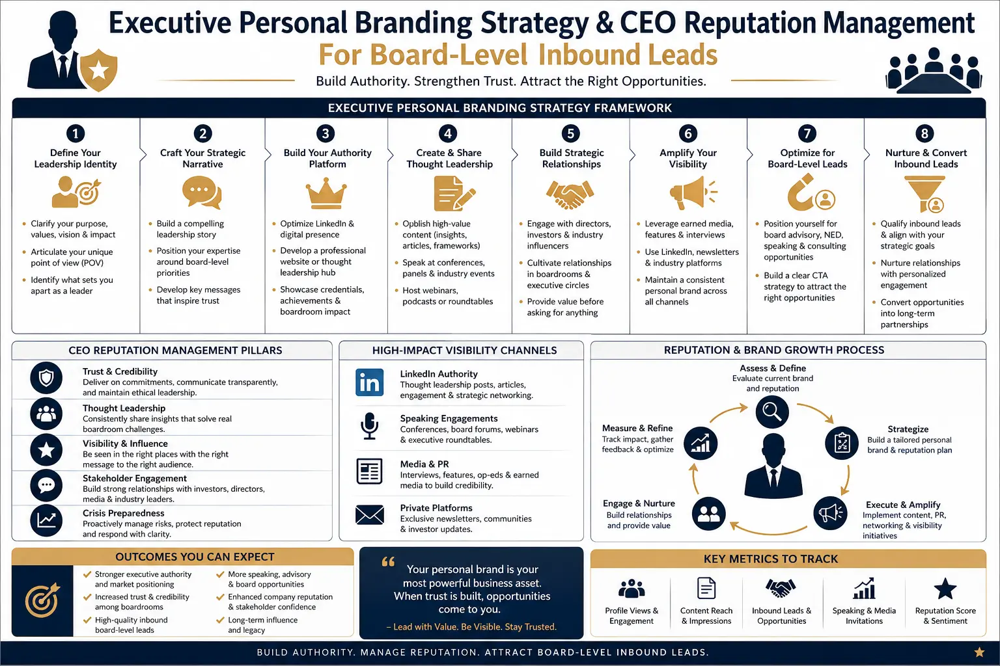
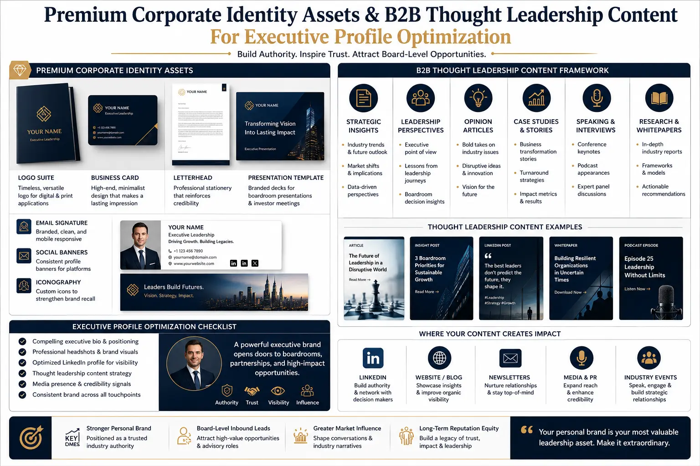

How to Structure an Executive Personal Branding Strategy That Attracts Board-Level Inbound Leads
The Invisible Executive Problem — and Why It Costs More Than You Think
There is a particular kind of professional invisibility that affects accomplished executives more than any other group. These are leaders with decades of operational achievement, transformative business results, and deep industry knowledge — but whose digital presence communicates none of it. Their LinkedIn profile reads like a job application from 2014. Their Google search results return nothing of substance. Their professional reputation exists entirely in the memories of the people who have worked with them directly — and nowhere else.
In 2026, this invisibility is not merely a missed marketing opportunity. It is a structural competitive disadvantage. Board selection committees, institutional investors, strategic partners, and enterprise buyers all conduct digital due diligence on individuals before they engage with companies. A well-structured executive personal branding strategy is the systematic process of ensuring that when these decision-makers search for you, what they find communicates the authority, competence, and strategic value that your career has actually produced.
This guide is written for the C-suite executive, the founder, and the managing director who understands that building a personal brand profile is not about social media vanity — it is about constructing the professional identity infrastructure that attracts board-level inbound leads, advisory invitations, speaking engagements, and partnership opportunities that would otherwise never materialise.
Why C-Suite Leaders Need a Structured Executive Personal Branding Strategy
The business case for a structured executive personal branding strategy is not theoretical — it is measurable and direct. Research consistently shows that B2B buyers are more likely to engage with companies whose leadership has a visible, credible personal brand. Founders and CEOs who invest in personal branding for founders report increased inbound deal flow, stronger investor confidence, and accelerated partnership development — not because personal branding replaces business fundamentals, but because it makes the leader and the business visible to the right audiences at the right professional moments.
The specific executive contexts where an executive personal branding strategy produces direct professional return:
Board and Advisory Appointments
Board selection committees evaluate candidates through their digital presence before any personal introduction. An executive with a comprehensive personal brand — published thought leadership, strategic media visibility, and a professionally optimised LinkedIn profile — enters the consideration set. An equally qualified executive with no digital presence does not. Executive profile optimization is the first qualification in the modern board appointment process.
Inbound Business Development
Enterprise buyers and strategic partners increasingly discover vendors and collaborators through executive-level content rather than corporate marketing. A founder whose B2B thought leadership content demonstrates genuine domain expertise attracts inbound inquiries from prospects who have already evaluated the executive's competence — shortening sales cycles and producing higher-quality commercial relationships.
Investor and Fundraising Credibility
Institutional investors and venture capitalists research founding teams before they review pitch decks. A CEO with a well-managed digital reputation — strategic content, media coverage, and industry recognition — presents a fundamentally different risk profile than a CEO whose Google search returns nothing. CEO reputation management directly influences fundraising outcomes and investor confidence.
Talent Acquisition and Employer Brand
Senior candidates research the leaders they would report to before accepting offers. A founder or CEO with a visible, authentic personal brand — sharing strategic thinking, demonstrating values, and communicating vision through B2B thought leadership content — attracts higher-calibre candidates and reduces recruitment cycles for leadership-level hires.
The Foundation: Executive Profile Optimization That Commands Authority
Every executive personal branding strategy begins with the foundation layer — the digital profiles and assets that decision-makers encounter first. Executive profile optimization is not a cosmetic exercise in rewriting LinkedIn summaries. It is the strategic reconstruction of every element of the executive's digital identity to communicate specific authority, specific expertise, and specific professional value.
The LinkedIn profile is the centrepiece. For most executives, it is the single most-viewed professional document in their career — seen more frequently than any CV, any pitch deck, any company website. Executive profile optimization on LinkedIn involves reconstructing the headline to communicate value rather than title, rewriting the summary to function as a strategic positioning statement rather than a career chronology, and restructuring the experience section to emphasise outcomes and strategic contributions rather than responsibilities.
Beyond LinkedIn, building a personal brand profile requires attention to every digital touchpoint: the executive's bio on the company website, their speaker profile on conference platforms, their Google Knowledge Panel if applicable, and their presence across industry directories and media databases. Each of these touchpoints should communicate a consistent narrative — the same positioning, the same expertise claims, the same professional identity. Consistency across platforms is the hallmark of a professionally managed personal brand, and inconsistency is the hallmark of one that has been neglected.
For executives seeking personal brand consulting near me, the first question to ask any prospective consultant is whether they begin with a comprehensive digital audit — mapping every existing touchpoint and assessing the current state of the executive's digital identity before proposing any content or asset creation. Without this audit, any branding activity is built on assumptions rather than evidence.

The LinkedIn Thought Leadership Framework: Content That Builds Authority Systematically
A LinkedIn thought leadership framework is fundamentally different from a social media content calendar. Where social media content aims for engagement metrics — likes, shares, comments — a thought leadership framework aims for authority accumulation. Every piece of content published under a LinkedIn thought leadership framework contributes to a specific narrative about the executive's expertise, strategic perspective, and industry authority. The engagement metrics are secondary indicators; the primary objective is positioning.
The structural components of a professional LinkedIn thought leadership framework for executive personal branding:
- Thematic pillars (3 to 5 defined domains). Every executive's thought leadership should be organised around three to five specific thematic pillars that reflect their genuine expertise and strategic perspective. A manufacturing CEO might structure their pillars around operational excellence, supply chain innovation, sustainability in manufacturing, leadership development, and industry-specific technology adoption. These pillars provide the structure that prevents content from becoming random and ensures each post contributes to a coherent authority narrative.
- Content format rotation. Effective B2B thought leadership content rotates across multiple formats: long-form articles that demonstrate depth of analysis, short-form posts that share specific insights or observations, strategic commentary on industry developments that demonstrates awareness and perspective, and original data or experience-based insights that demonstrate unique knowledge. The format rotation maintains audience engagement while building different dimensions of professional authority.
- Publishing cadence and consistency. A minimum viable LinkedIn thought leadership framework requires two to three posts per week — enough to maintain algorithmic visibility and audience familiarity without requiring content production that interferes with the executive's operational responsibilities. The cadence should be sustainable over twelve months, not intensive over three months followed by silence.
- Strategic engagement protocol. Thought leadership is not broadcast-only. The executive's engagement with others' content — thoughtful comments on industry peers' posts, substantive contributions to relevant discussions, and strategic connection-building through meaningful interaction — is as important as publishing original content. The engagement protocol should be designed to build relationships with specific target audiences: potential board contacts, industry influencers, media professionals, and prospective clients.
CEO Reputation Management: Protecting and Shaping the Executive Narrative
CEO reputation management is the ongoing discipline of monitoring, shaping, and protecting the public perception of a chief executive across all digital and professional channels. It operates on two levels: proactive reputation building through strategic content and media visibility, and defensive reputation protection through monitoring and rapid response to reputational risks.
The proactive dimension of CEO reputation management involves ensuring that the first page of Google search results for the executive's name presents a controlled, authoritative narrative. This typically requires: a professionally optimised LinkedIn profile ranking in the top three results, published articles or media features occupying additional first-page positions, the company website's leadership page appearing prominently, and any speaking engagement or conference profiles contributing to the overall narrative of professional authority.
For founders and managing directors who are building businesses alongside their personal brands, personal branding for founders and CEO reputation management are inseparable from business development. The founder's reputation is the company's reputation in the early and growth stages — and in many industries, it remains so well into maturity. An investment in the founder's personal brand is a direct investment in the company's market credibility.
Premium Corporate Identity Assets: The Visual and Content Foundation
A credible executive personal branding strategy requires premium corporate identity assets — the professional visual and content materials that communicate executive authority at the quality level that board-level audiences expect. These are not stock photographs and template-designed materials. They are professionally produced assets that communicate the same level of quality and attention to detail that the executive brings to their business.
Professional Visual Identity
- Executive portrait photography: hero headshot, environmental portraits, and working context images
- LinkedIn banner and profile visual system designed for brand consistency
- Speaker kit photography and bio materials for conference and media use
- Consistent visual treatment across all professional platforms and touchpoints
Strategic Content Assets
- Executive bio in multiple lengths (50-word, 150-word, 500-word) for different professional contexts
- Thought leadership article templates aligned with thematic pillars
- Speaking engagement abstracts and session descriptions for conference submissions
- Media kit with professional positioning statement and interview talking points
Digital Authority Infrastructure
- LinkedIn profile fully reconstructed for executive profile optimization
- Company website leadership page with strategic executive positioning
- Google search result strategy to control the first-page narrative
- Professional profiles across industry directories, speaker platforms, and media databases

Measuring ROI: From Vanity Metrics to Board-Level Outcomes
The executives who invest in executive personal branding strategy with the highest return are those who measure outcomes against professional objectives — not social media engagement metrics. The relevant performance indicators for executive personal branding are fundamentally different from those used to measure corporate marketing campaigns.
The metrics that matter for an executive personal branding strategy designed to attract board-level inbound leads: the number and quality of inbound connection requests from target-level contacts (board members, institutional investors, enterprise buyers), the frequency and source of inbound speaking and media inquiry requests, the volume of direct business development opportunities attributed to the executive's personal brand visibility, the quality of talent applications citing the executive's content or public profile as a discovery mechanism, and the improvement in search engine presence for the executive's name and key professional terms.
For executives evaluating personal brand consulting near me, the consultant's ability to define and measure these professional outcomes — rather than promising follower growth and engagement rates — is the clearest signal of whether they understand executive-level personal branding or are simply applying consumer social media tactics to an executive context.
The 120-Day Implementation Framework
A structured executive personal branding strategy follows a phased implementation that builds from foundation to visibility to authority. In the first 30 days, the focus is entirely on foundation: completing the digital audit, reconstructing the LinkedIn profile through comprehensive executive profile optimization, producing the premium corporate identity assets, and establishing the LinkedIn thought leadership framework with defined pillars and content calendar.
Between days 30 and 90, the focus shifts to consistent execution and visibility building. The executive publishes B2B thought leadership content according to the framework, engages strategically with target audiences, and begins building the digital footprint across secondary platforms. CEO reputation management monitoring begins during this phase, establishing the baseline metrics against which progress will be measured.
By day 120, executives with consistent execution across the framework typically report the first measurable professional outcomes: increased profile visibility among target audiences, inbound connection requests from previously unreachable contacts, early speaking or media opportunities attributed to published content, and the beginning of a compounding authority effect where each new piece of content builds on the credibility established by previous publications. Building a personal brand profile at the executive level is not a sprint — it is the establishment of a professional asset that compounds in value with every month of consistent investment.
Conclusion
An executive personal branding strategy that attracts board-level inbound leads is not a marketing campaign — it is a professional infrastructure project. It requires the same strategic thinking, systematic execution, and long-term commitment that any serious business investment demands. The executives who build this infrastructure — through professional executive profile optimization, a structured LinkedIn thought leadership framework, rigorous CEO reputation management, and premium corporate identity assets — create a professional presence that attracts opportunities their invisible peers never even learn about.
The question is not whether your professional reputation matters at the board level. It does — decisively. The question is whether you are managing it deliberately, or leaving it to chance. Personal branding for founders and C-suite executives is the deliberate choice to control the narrative, build the infrastructure, and create the conditions under which the right opportunities find you — rather than waiting for introductions that may never come.
Key Topics
Ready to Build an Executive Personal Brand That Attracts Board-Level Opportunities?
At The PhD Ads in Madurai, we build complete executive personal branding strategy programmes for founders, CEOs, and senior executives — from LinkedIn thought leadership frameworks and CEO reputation management to executive profile optimization and premium corporate identity assets. We work with leaders who understand that professional reputation is a strategic asset, not a social media exercise — and who want the infrastructure that attracts board-level inbound leads, advisory invitations, and partnership opportunities.
Email: team@e2o.in